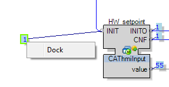

2. Working with Watch Points
A watch point can be moved by selecting it and dragging it to another position. To return it to its original position, right-click on it and select Dock:

Right click on a watch point to change the display view of watch points For example:
-
A time of day (TOD) variable can be shown in:
-
UTC: the watch dialog shows the current UTC time from the controller
-
Local Time: the watch dialog shows the current UTC time from the controller, but with respect to the time zone shift as used on the local PC logged on to the controller
-
Controller Time: the watch dialog shows the current system time from the controller including any time zone shift set on the controller, that is, the local time from the controller
-
-
An INT may be shown in decimal, hexadecimal or binary format.
To activate this feature, open the Backstage by clicking File from the main menu and select Settings. Then select IEC Network Editor and set Watch dialog to True. For additional information, refer to the description of the Options section of the Distributed PAC Project topic. Now you can left-click on the watch point to open the Watch dialog.
Watch dialog icons include:
|
Icons |
Description |
|---|---|
|
Force Value / Watch |
Switch between watching and forcing. If the value is forced the background of this icon and that of the corresponding watch point are shown in yellow. |
|
Add to Watch Trend |
Add the corresponding watch point to the Watch Trend pad. |
|
Accept Watch / Force |
Saves the changes made in the dialog and closes the dialog. The watch point is then shown in the required format. If the format is not displayed correctly, it may be necessary to trigger an event on the block to trigger a refresh of the displayed watch point. |
|
Cancel |
Closes the dialog without saving the changes. |
|
Display Style |
Displays a menu containing the formats selectable for this data type. Then set the check mark in front of the required format.
NOTE: The view in the dialog is updated immediately. The changes, however, must be confirmed with the Accept Watch / Force icon to also show the watch point in this format. Otherwise, when the Watch dialog is closed the changes are canceled and the previously used format re-displayed.
NOTE: When editing the formats selectable in the Display Style menu, confirm your selections by clicking the Accept Watch / Force icon to show the watch point in the selected format. Failure to do so will cause the changes to be canceled and the previously used format to be re-displayed, when you close the Watch dialog.
|
|
Add Watch Line |
Adds another display line in the Watch dialog. In this way, you can display multiple formats simultaneously. The format that is selected in the top line of the Watch dialog is also displayed at the watch point when the Watch dialog is closed, provided that the change has been completed with the Accept Watch / Force icon . In this case the rows of the Watch dialog are displayed in the last parameterized way, once you open the Watch dialog again. |
|
Remove Watch Line |
Closes the corresponding line in the Watch dialog. To make the changes persistent even when reopening the Watch dialog, it is necessary to confirm these changes by clicking on the Accept Watch / Force icon ). Otherwise, the deleted row is visible again after reopening the dialog Watch. |
|
Invalid Value |
This button appears instead of the Accept Watch / Force icon ) when forcing a value, when the specified value is not valid for the used data type. |